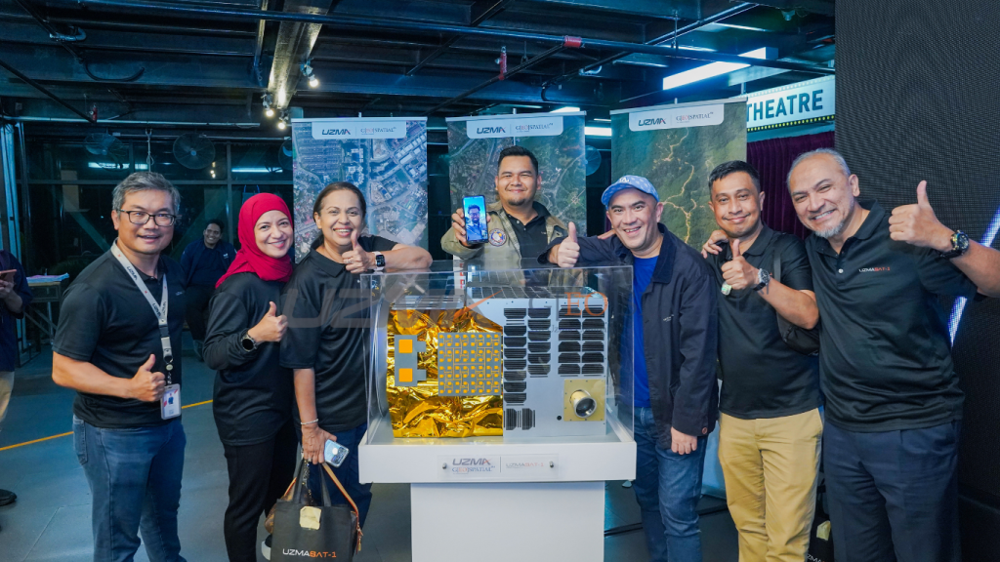
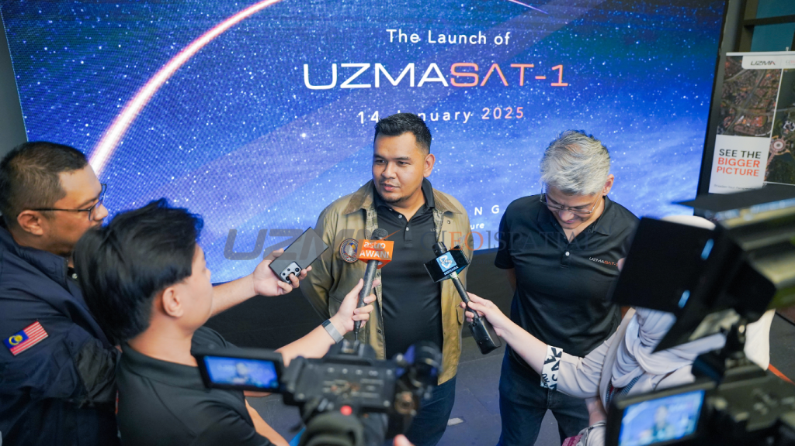
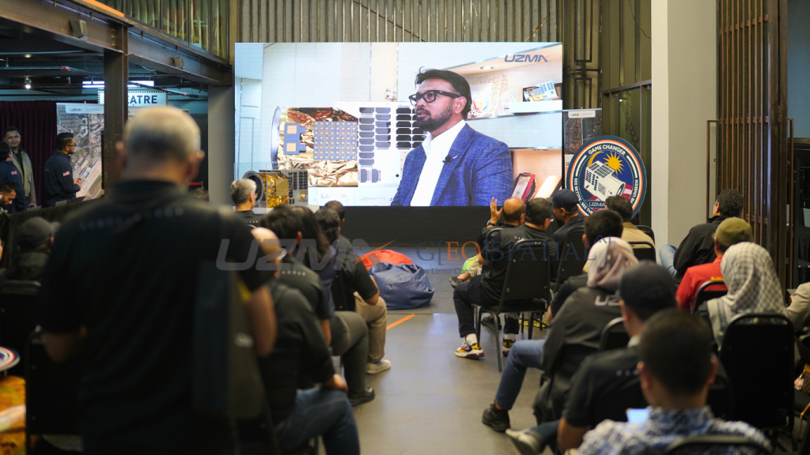
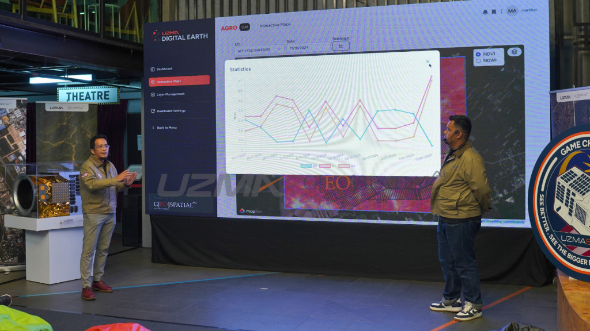
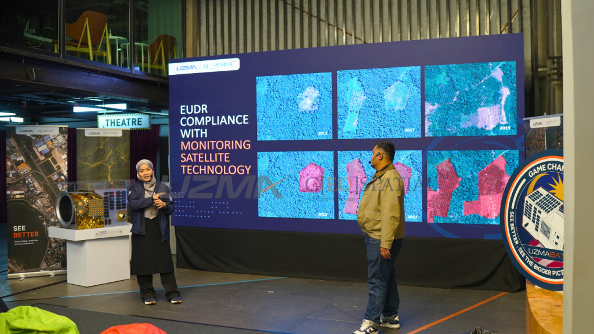

- Press Release, UzmaSAT-1
Uzma Berhad Marks a Historic Milestone with the Launch of UzmaSAT-1
- January 15, 2025
- By Media GeoAI
Uzma Berhad (“Uzma” or “Company”) proudly announces the successful launch of UzmaSAT-1, Malaysia’s first commercial very high-resolution Earth Observation (“EO”) satellite. The launch occurred on 14 January 2025 at 11.09am PST (15 January 2025 at 3.09am GMT+8), marking a historic milestone for both Uzma and Malaysia in advancing the nation’s space industry.
UzmaSAT-1 was deployed in low earth orbit via SpaceX’s Falcon 9 Transporter 12 at exactly 4.06am on 15 January 2025, 57 minutes 35 seconds after launching from Vandenberg Space Force Base, California, US at 11.09am PST / 3.09am GMT +8.
This achievement reflects a significant step in Malaysia’s ability to lead in cutting-edge geospatial technologies in the region. As part of a constellation of over 25 satellites managed by Satellogic, UzmaSAT-1 will deliver submeter (up to 50cm per pixel) high-resolution imagery and data to enable industries and governments to make smarter, data-driven decisions.
A single image from UzmaSAT-1 contains up to 1GB of data, covering 50 square kilometres and refined to a resolution of 50cm, offering unparalleled insights for various applications across key sectors, including but not limited to agriculture, plantations, energy, defence, disaster response, and monitoring applications.


The launch of UzmaSAT-1 aligns with two critical national initiatives: the Malaysia Space Exploration 2030 (MSE2030) and the Malaysia Space Industry Strategic Plan 2030 (SISP2030). MSE2030 provides a visionary framework to drive scientific advancements and technological innovations in space exploration, while SISP2030 outlines strategic efforts to position Malaysia as a key player in the global space economy by 2030.
Dato’ Kamarul Redzuan Muhamed, Group CEO of Uzma Berhad, explained the rationale for diversifying into the space industry, saying, “Uzma’s agility and adaptability, honed through decades in the oil and gas sector, have prepared us to tackle complex challenges. Diversifying into space aligns with our transformative journey of digitalisation, innovation, and technology. The same core principles that drive our success in energy, which are precision, resilience, and innovation, are also key to excelling in geospatial intelligence. By venturing into space, we are not just exploring new opportunities but also paving the way for a sustainable and technology-driven future.”
Dato’ Kamarul added, “UzmaSAT-1 is a testament to our ambition to contribute meaningfully to Malaysia’s space aspirations under the MSE2030 and SISP2030 frameworks. By nurturing local expertise and driving technological growth, we aim to solidify Malaysia’s position as a leader in space technology in Southeast Asia.”
Transforming Data into Insights with Uzma Digital Earth
The launch further enhances the capabilities of Uzma Digital Earth (“UzmaDE”) platform, an advanced geospatial AI and data analytics solution. UzmaDE is already operational, providing geospatial intelligence services by leveraging data from various satellite sources.
With the inclusion of UzmaSAT-1, the platform will expand its data-processing capabilities to offer even more precise, actionable insights.


Key features of UzmaDE include:
- Boosting Agricultural Efficiency: Precision mapping for enhanced crop management and soil health monitoring, supporting Malaysia’s food security efforts.
- Progressive Monitoring with Highly Sensitive Measurements: Near real-time monitoring of land movement, disasters, and trend analysis.
- Urban Development: Detailed imaging for smarter urban planning and sustainable infrastructure development.
- Environmental Protection: Supporting ESG initiatives such as carbon accounting and biodiversity conservation.
- Energy and Resource Management: Enhancing operational efficiency in offshore exploration and renewable energy projects.
With up to seven daily revisits and multi-spectral imaging capabilities, UzmaSAT-1, as part of the constellation, mitigates challenges posed by cloudy conditions and enhances data analysis precision, ensuring reliable, timely information for its users.
Dato’ Kamarul Redzuan Muhamed, Group CEO of Uzma Berhad, said, “The successful launch of UzmaSAT-1 is a moment of immense pride for Uzma and I believe for Malaysia as well. The last launch of an EO satellite was RazakSAT-1 in 2009, and we are proud to establish this legacy as a satellite and space industry player. This milestone is a testament to our dedication to advancing Malaysia’s space ambitions and delivering real-world benefits to the region.”
Dato’ Kamarul added, “This would not have been possible without the clear and insightful guidance from the Malaysia Space Agency (“MYSA”), Ministry of Science, Technology and Innovation (“MOSTI”), Malaysian Industry-Government Group for High Technology (“MIGHT”), MIMOS, SIRIM, Malaysian Space Industry Consortium (“MASiC”), Satellogic, our shareholders, and our valued clients. Their belief in Uzma’s capabilities has been instrumental in making this historic launch possible.”


Through UzmaSAT-1 and UzmaDE, Uzma is fostering innovation and creating opportunities in Malaysia’s high-tech sectors. By driving growth in the geospatial industry, Uzma is contributing to the development of a highly skilled workforce and ensuring a sustainable future for the nation.
Dato’ Kamarul said, “Our vision is to build the industry from the inside, bringing higher technology to our shores and train Malaysians to harness these technologies. UzmaSAT-1 is the first stepping stone for us at Uzma, and we are excited to explore more possibilities and opportunities in this sector.”
Commenting on Uzma’s outlook for the sector, Dato’ Kamarul said, “We expect our Digital Earth division to grow considerably as awareness of our services grows. We are confident that the space industry has the potential to complement our Oil & Gas services, and with time, contribute significantly to the Company’s portfolio.
The successful launch of UzmaSAT-1 marks the beginning of a new era for Uzma and Malaysia in space technology. As Uzma continues to harness satellite data and cutting-edge technologies, the Company is poised to drive innovation and regional growth, solidifying its position as a leader in the geospatial intelligence industry.”
For further information, please visit Uzma’s website at www.uzmagroup.com.
Share the Post:Related Posts
Looking for Answers to Your Industry Issues?
If you want us to share more about space technology, EUDR, EO satellite applications, and industry related, feel free to drop your contact and experience the technology yourself.